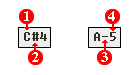

Although I will expect users to understand notes, I will not
assume they understand how notes operate within tracker style pattern editing.
The following is what a note appears as in Aldrin (and other trackers):

Figure
2.4.
Note Meanings:
1. Note:
This is simply the current note which
will be played. As stated, notes in Aldrin are played at the same frequencies
as notes in any other musical application.
2. Sharp:
Again, just as in normal music Aldrin
supports sharps (also known as semi-tones). It is worth mentioning that
Aldrin does not support flats, as they are technically the same as sharps.
3. Dash:
A dash for the second column in a note
simply indicates that the note is natural. Meaning it is A-G.
4. Octave:
The number at the end of a note indicates
its octave. It will always be a number between 0 and 9. The higher the number,
the higher the octave. For the musically concerned; since the base octave
in Aldrin is 4, middle C would be represented by
C-4
.